Price Shock Simulator
- ใช้ตอบโจทย์อะไร
- รู้ผลกระทบของต้นทุนก่อนตัดสินใจ
- WHY / Business Keyword
- กำไรลดต้นทุนการตัดสินใจ
- ตอน Capture ควรให้เห็นอะไร
- ต้นทุนวัตถุดิบหรือค่าแรงที่เปลี่ยน + ผลกำไรของสินค้าแต่ละรุ่น
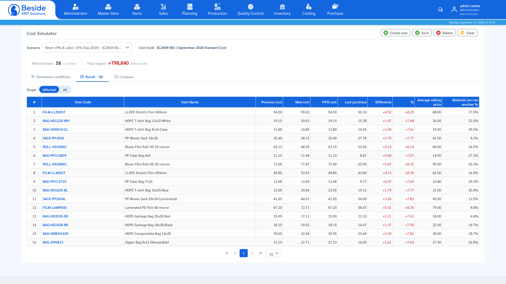
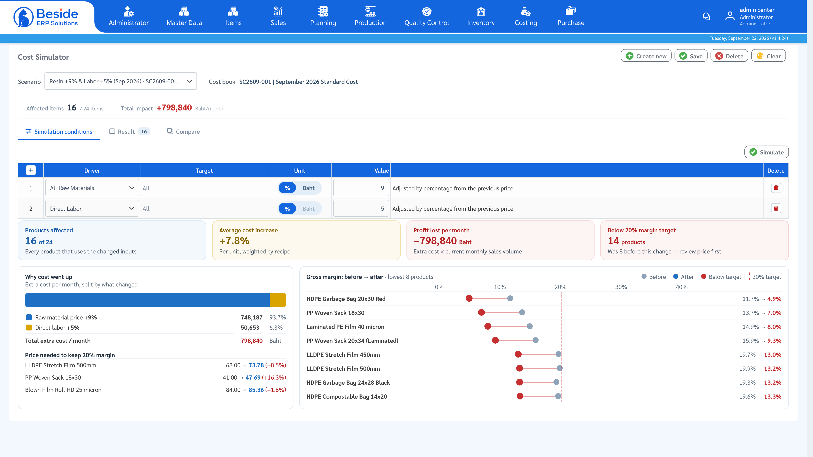
Cost Comparison
- ใช้ตอบโจทย์อะไร
- รู้ว่าสินค้าตัวไหน Margin ดี/แย่
- WHY / Business Keyword
- กำไรการตัดสินใจ
- ตอน Capture ควรให้เห็นอะไร
- ต้นทุนเทียบราคาขาย หรือส่วนต่างที่เห็นชัด
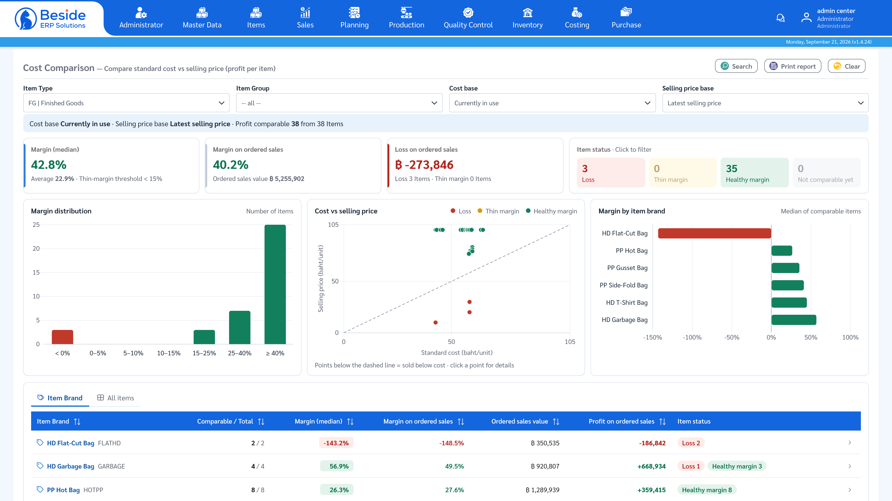
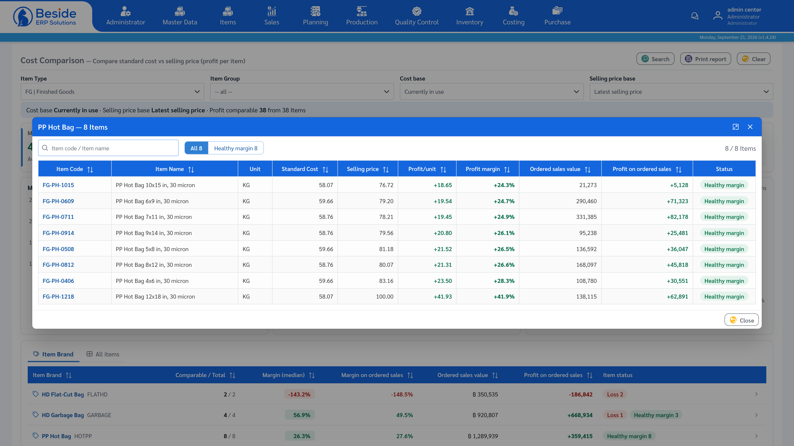
Machine Monitoring
- ใช้ตอบโจทย์อะไร
- เห็นสถานะโรงงานจริง
- WHY / Business Keyword
- ประสิทธิภาพเวลาลดต้นทุน
- ตอน Capture ควรให้เห็นอะไร
- หลายเครื่องพร้อมสถานะ Running / Stop ให้เห็นในภาพเดียว
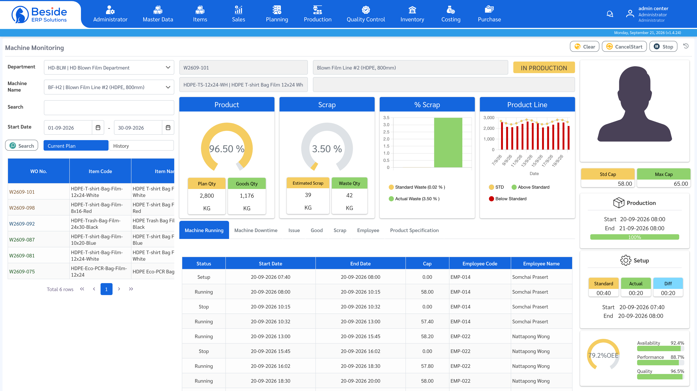
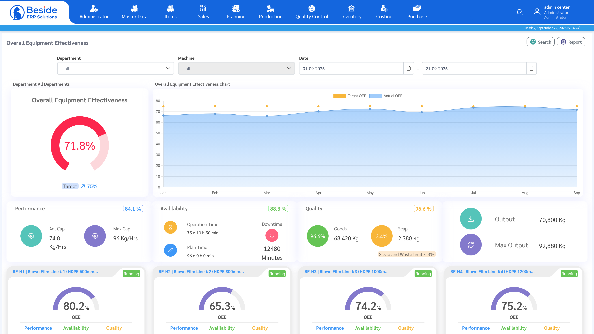
OEE
- ใช้ตอบโจทย์อะไร
- วัดประสิทธิภาพเครื่องจักร
- WHY / Business Keyword
- ประสิทธิภาพลดต้นทุน
- ตอน Capture ควรให้เห็นอะไร
- ค่า OEE และองค์ประกอบสำคัญ ถ้ามีกราฟยิ่งดี
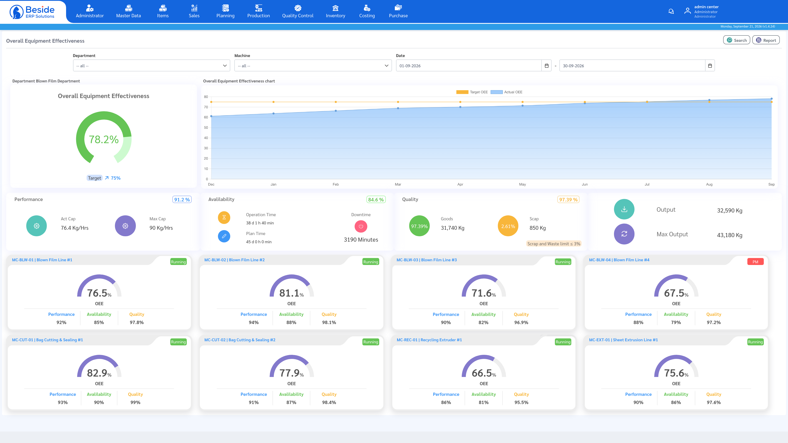
Pareto Downtime
- ใช้ตอบโจทย์อะไร
- รู้ว่าเครื่องหยุดเพราะอะไร และควรแก้อะไรก่อน
- WHY / Business Keyword
- ประสิทธิภาพเวลาลดต้นทุน
- ตอน Capture ควรให้เห็นอะไร
- Pareto ที่เห็น Top Cause ชัด ๆ
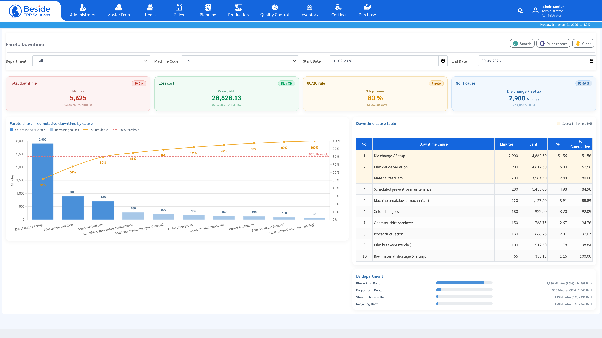
Master Production Schedule (MPS)
- ใช้ตอบโจทย์อะไร
- เห็นภาพแผนการผลิตจาก Demand
- WHY / Business Keyword
- ประสิทธิภาพเวลาการตัดสินใจ
- ตอน Capture ควรให้เห็นอะไร
- มุมมองวัน/สัปดาห์/เดือน หรือ Gantt ที่ดูแล้วรู้ว่าเป็นแผนผลิต
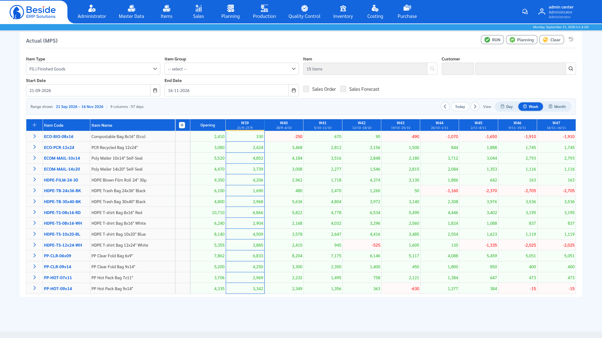
Material Requirements Planning (MRP)
- ใช้ตอบโจทย์อะไร
- รู้ว่าต้องใช้วัตถุดิบอะไร เท่าไร เมื่อไร
- WHY / Business Keyword
- เงินทุนหมุนเวียนลดต้นทุนประสิทธิภาพ
- ตอน Capture ควรให้เห็นอะไร
- Requirement, Qty, วันที่ต้องใช้ ให้เห็นความสัมพันธ์กับแผน
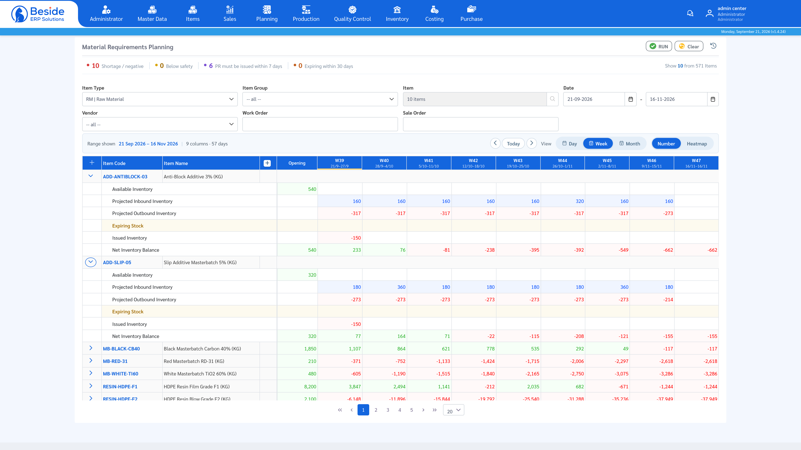
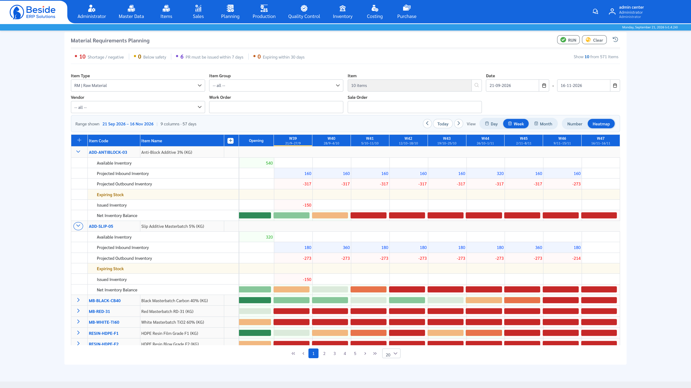
Procurement Suggestion
- ใช้ตอบโจทย์อะไร
- ลดซื้อเกินและลดของขาด
- WHY / Business Keyword
- เงินทุนหมุนเวียนลดต้นทุนเวลา
- ตอน Capture ควรให้เห็นอะไร
- รายการที่ระบบแนะนำให้ซื้อจากผลของแผน
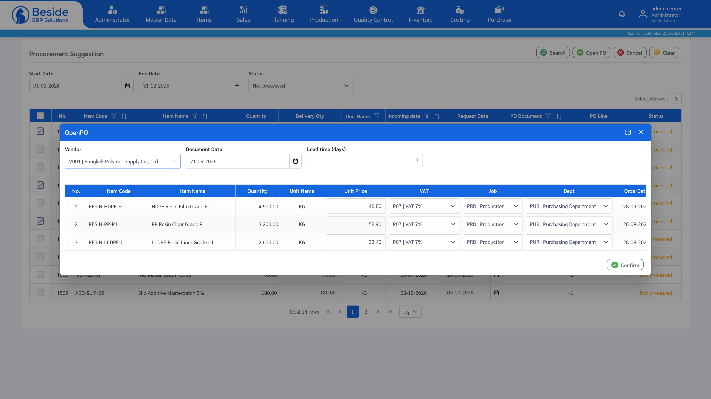
Shift Scheduling
- ใช้ตอบโจทย์อะไร
- ทำให้แผนลงเครื่องจักรได้จริง
- WHY / Business Keyword
- ประสิทธิภาพเวลา
- ตอน Capture ควรให้เห็นอะไร
- ตารางเครื่อง/กะ/ช่วงเวลา ถ้าเห็นการไม่ให้เวลาซ้อนกันจะดีที่สุด
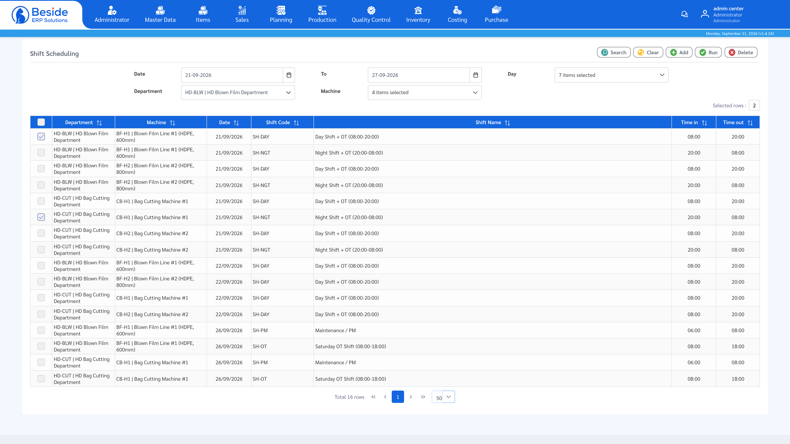
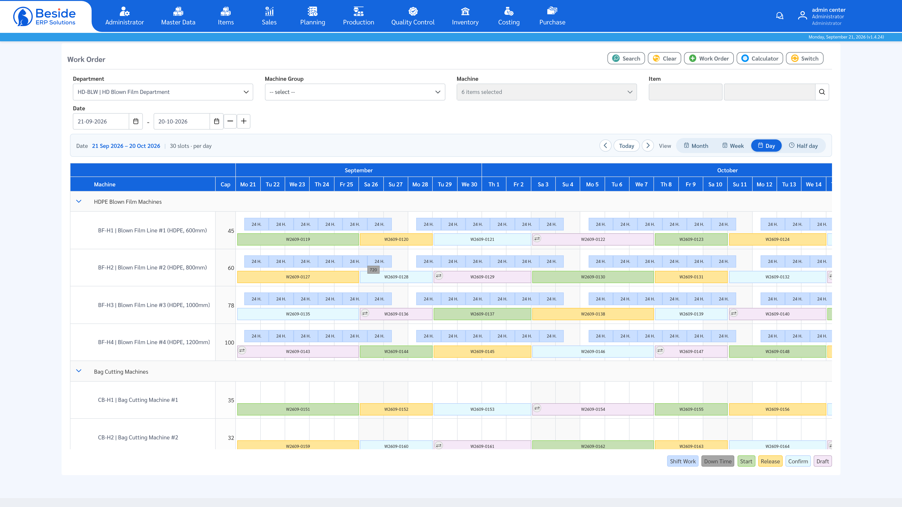
Batch Tracking
- ใช้ตอบโจทย์อะไร
- ตามปัญหาจากวัตถุดิบถึงลูกค้า
- WHY / Business Keyword
- ความเสี่ยงคุณภาพเวลา
- ตอน Capture ควรให้เห็นอะไร
- Lot หนึ่งล็อตเชื่อมย้อนกลับและไปข้างหน้าให้เห็น Flow ชัด
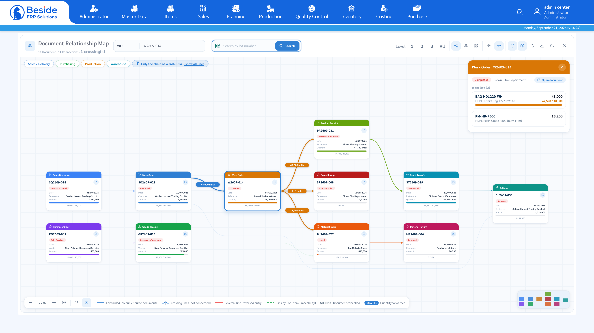
Product Inspection
- ใช้ตอบโจทย์อะไร
- คุมคุณภาพจากข้อมูลในระบบ
- WHY / Business Keyword
- คุณภาพความเสี่ยงเวลา
- ตอน Capture ควรให้เห็นอะไร
- Spec เทียบ Actual และ Pass/Fail
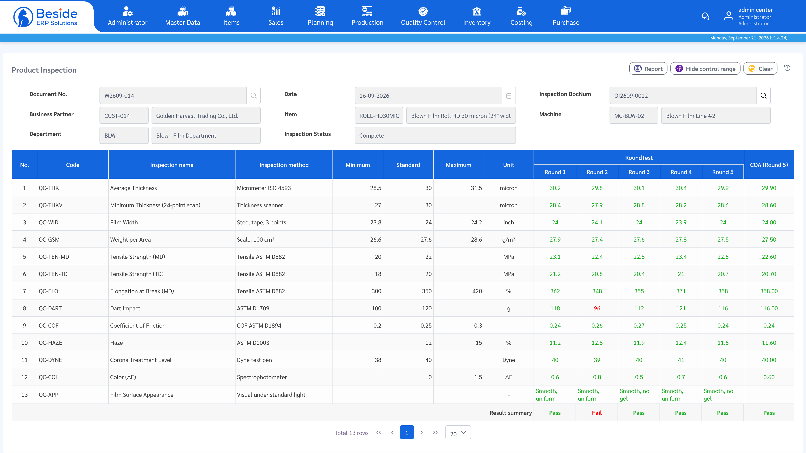
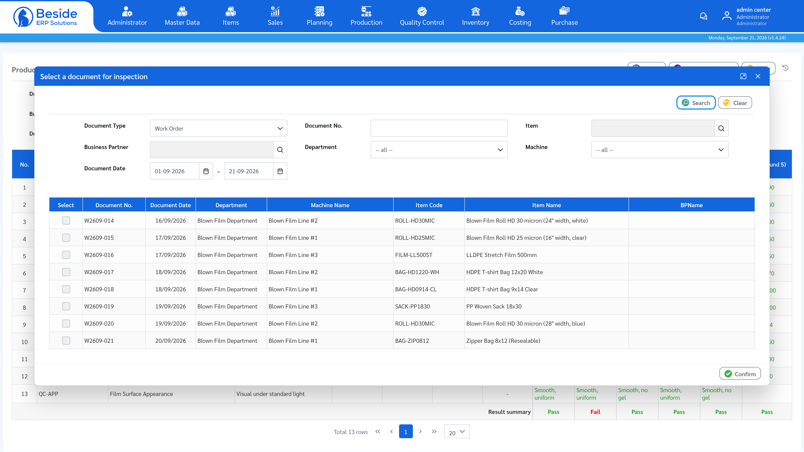
License / Online Users
- ใช้ตอบโจทย์อะไร
- รองรับโรงงานหลายกะโดยไม่ต้องซื้อ License ตามจำนวนคนทั้งหมด
- WHY / Business Keyword
- ลดต้นทุนคุณภาพชีวิตประสิทธิภาพ
- ตอน Capture ควรให้เห็นอะไร
- จำนวน License, คนที่ Online และถ้ามี Queue ให้เห็นด้วย
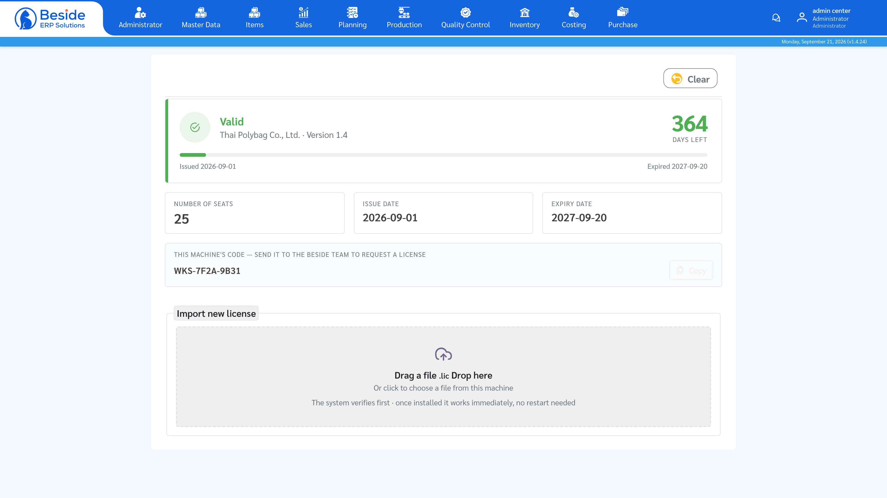
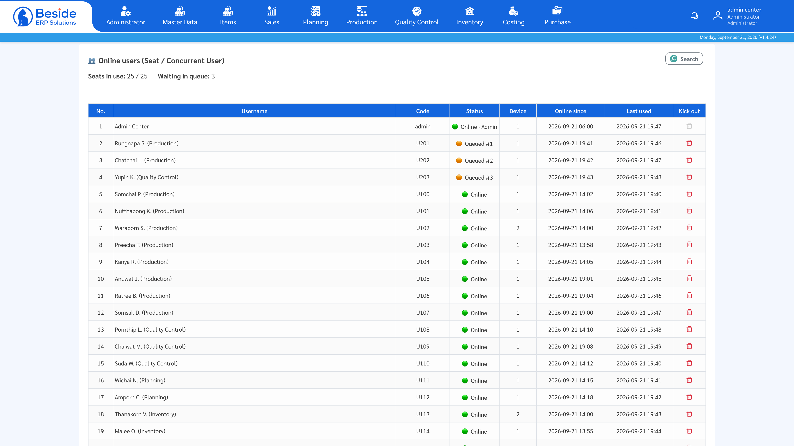
DOA Setup
- ใช้ตอบโจทย์อะไร
- ลูกค้าปรับ Approval Flow เอง
- WHY / Business Keyword
- เวลาคุณภาพชีวิตประสิทธิภาพ
- ตอน Capture ควรให้เห็นอะไร
- Flow/Level การอนุมัติที่ดูแล้วเข้าใจทันที
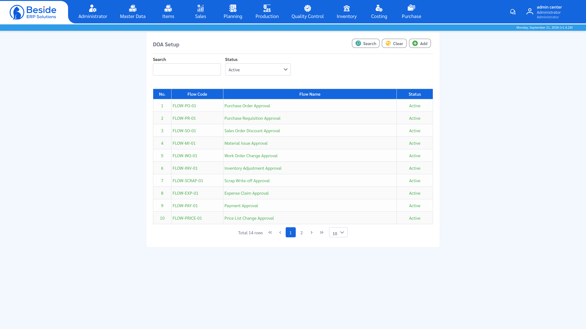
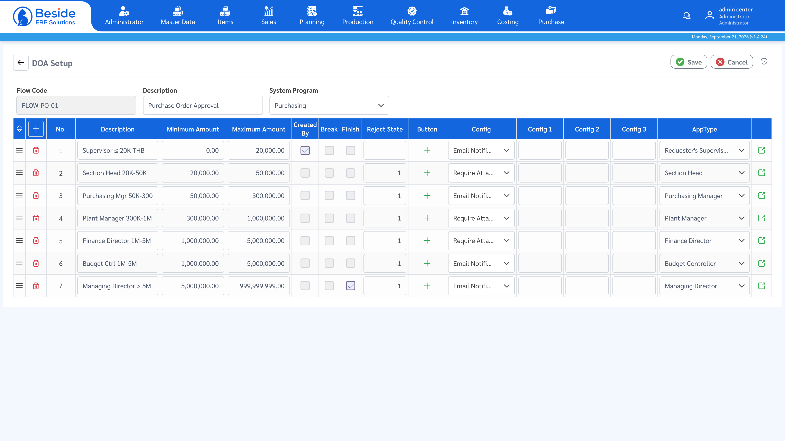
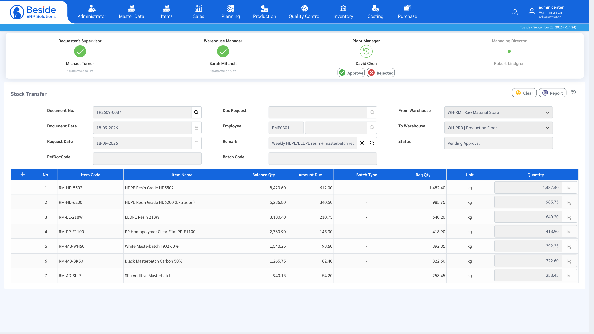
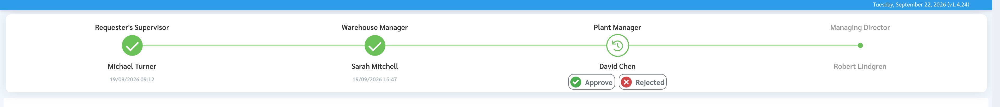
Quick Report / Quick Data
- ใช้ตอบโจทย์อะไร
- ลดการพึ่ง Vendor ในการทำ Report
- WHY / Business Keyword
- เวลาคุณภาพชีวิตลดต้นทุน
- ตอน Capture ควรให้เห็นอะไร
- หน้าจอที่แสดงว่า Admin สร้างชุดข้อมูลหรือ Report เองได้
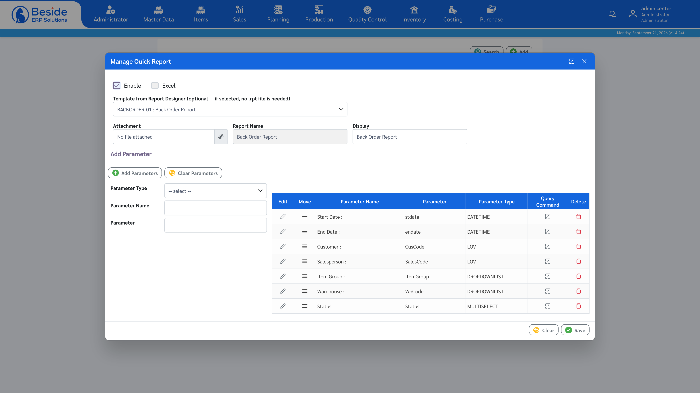
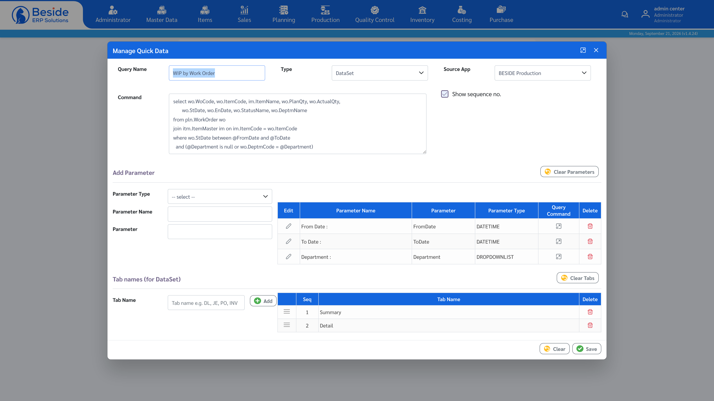
Report Designer
- ใช้ตอบโจทย์อะไร
- ปรับแบบฟอร์ม/รายงานได้เอง
- WHY / Business Keyword
- เวลาคุณภาพชีวิตลดต้นทุน
- ตอน Capture ควรให้เห็นอะไร
- Designer ที่เห็นการจัด Layout ชัด ๆ
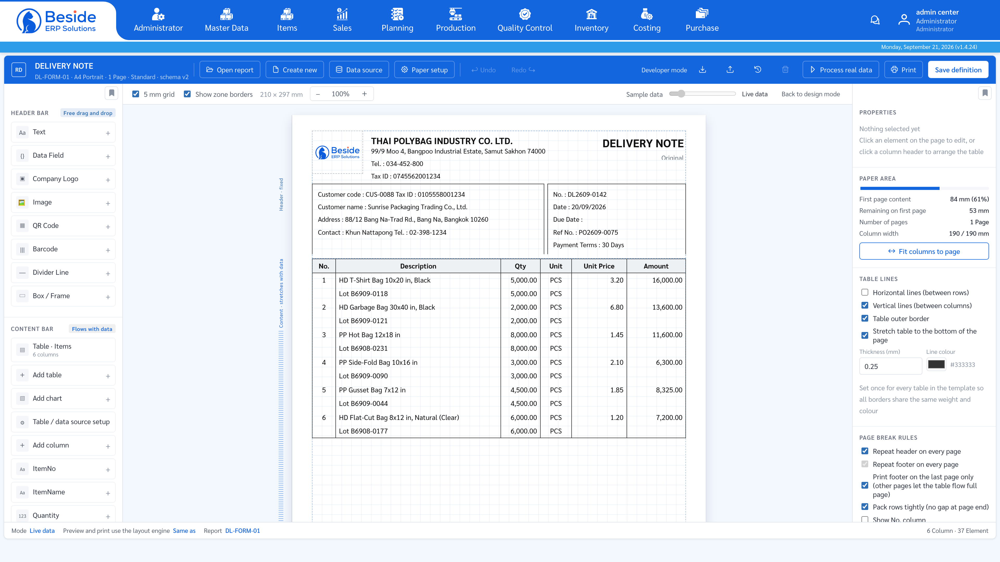
Stock Overview
เพิ่มเติม (นอก Excel)- ใช้ตอบโจทย์อะไร
- รู้ทันทีว่าของตัวไหนใกล้ขาดหรือจมเกิน ก่อนไลน์หยุดหรือเงินจม
- WHY / Business Keyword
- เงินทุนหมุนเวียนลดต้นทุนความเสี่ยง
- ตอน Capture ควรให้เห็นอะไร
- แท่งเทียบ Min–Max ทุกรายการ + มูลค่าที่ต้องเติม/ส่วนเกิน + เลือกกลุ่มสินค้า
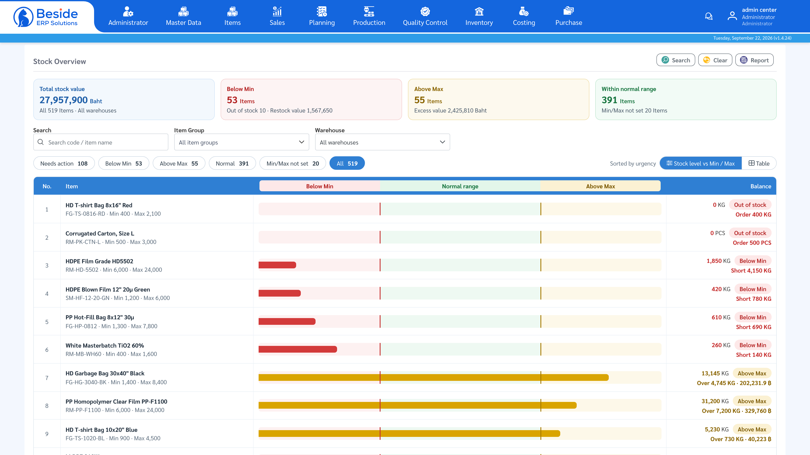
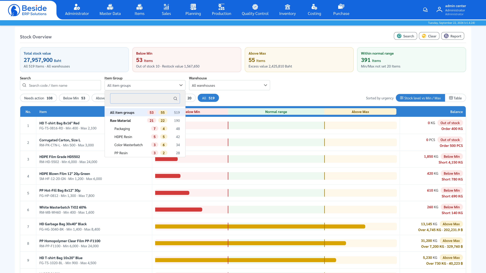
Project Summary Dashboard
เพิ่มเติม (นอก Excel)- ใช้ตอบโจทย์อะไร
- เห็นเงิน งานส่ง และต้นทุนของทั้งโครงการในจอเดียว
- WHY / Business Keyword
- กำไรการตัดสินใจความเสี่ยง
- ตอน Capture ควรให้เห็นอะไร
- งบ–ยอดขาย–ส่งของ–ต้นทุน–กำไร ของโครงการ + กราฟรายเดือน + รายการที่ต้องตาม
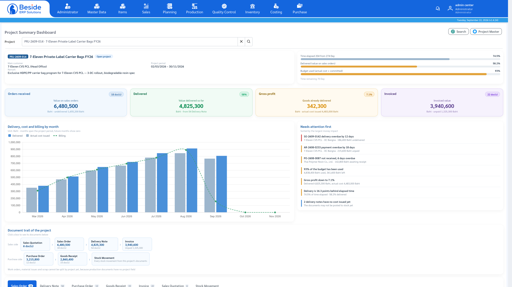
Production Plan Dashboard
เพิ่มเติม (นอก Excel)- ใช้ตอบโจทย์อะไร
- เห็นภาพรวมแผนผลิตทั้งเดือนว่าเดินตามแผนไหม
- WHY / Business Keyword
- ประสิทธิภาพเวลาการตัดสินใจ
- ตอน Capture ควรให้เห็นอะไร
- การ์ดสรุปส่วนบน: แผน–ผลิตได้–คงเหลือ สถานะเครื่อง สถานะใบสั่งผลิต + กราฟเป้าเทียบจริงรายวัน
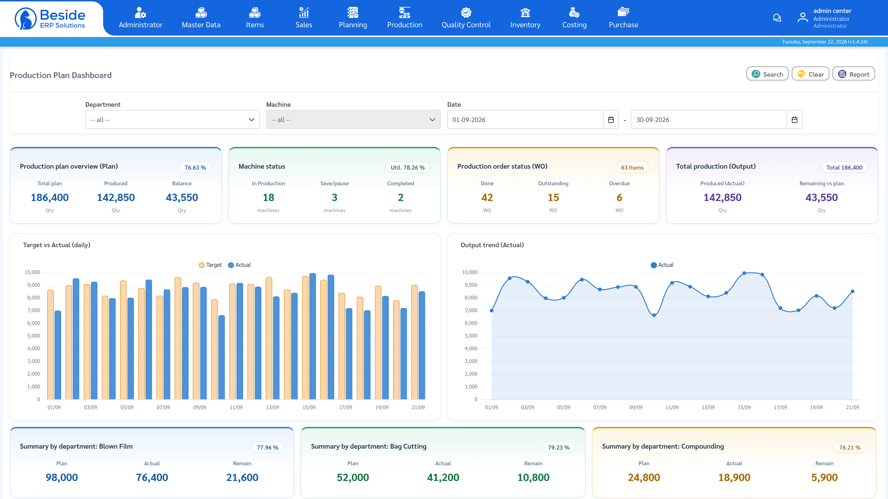